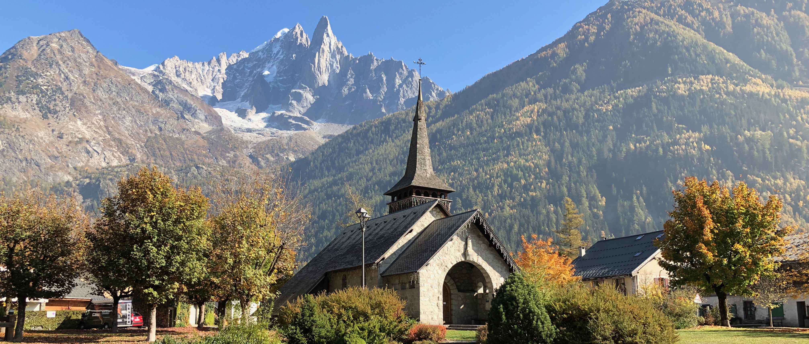
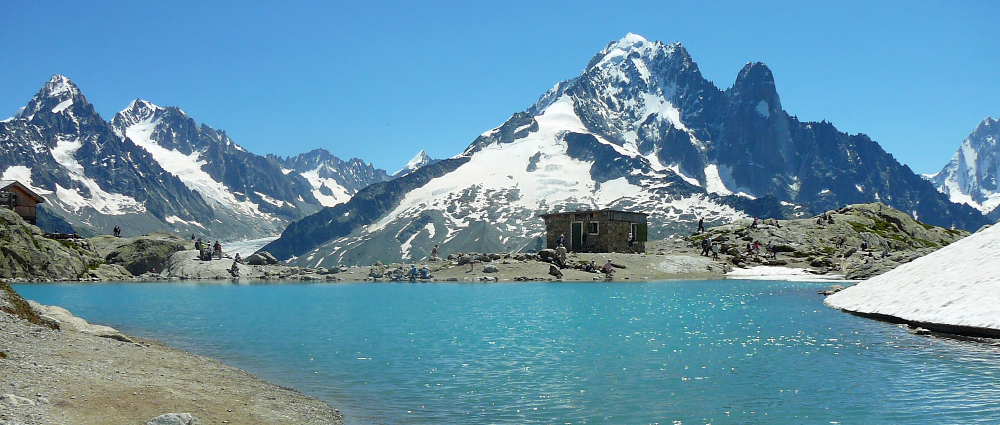
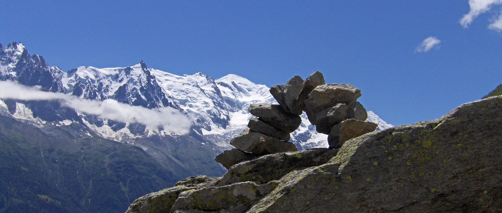

Aiguille du Midi

Chapelle des Praz

Le Lac Blanc

Panorama depuis Planpraz
Bienvenue dans la vallée de Chamonix
Chers visiteurs,
Je suis très heureux de vous accueillir sur ce site consacré à la vallée de Chamonix. Vous y trouverez toute ma passion pour cette magnifique vallée avec de nombreuses photos. Bonne visite à tous.
Ouverture des remontées mécaniques pour la saison d'été 2022
Vous trouverez ci-dessous les dates d'ouverture des remontées mécaniques de la vallée de Chamonix pour cet été 2022.
Aiguille du Midi
Téléphérique de l'Aiguille du Midi : ouvert jusqu'au 6 novembre 2022.
Télécabine Panoramique Mont Blanc : ouverte du 27 mai au 25 septembre 2022.
Montenvers - Mer de Glace
Montenvers - Mer de Glace :ouvert jusqu'au 2 octobre et du 22 octobre au 6 novembre 2022.
Brévent - Flégère
Télécabine de Planpraz :ouverte du 11 juin au 11 septembre et du 22 octobre au 6 novembre 2022.
Téléphérique du Brévent :ouvert du 11 juin au 11 septembre 2022.
Télécabine de la Flégère :ouverte du 11 juin au 11 septembre 2022.
Télésiège de l'Index :ouvert du 11 juin au 11 septembre 2022.
Glacier des Bossons
Télésiège du glacier des Bossons : ouvert du 18 juin au 18 septembre 2022.
Grands Montets
Télécabine Plan Joran :ouverte du 2 juillet au 4 septembre 2022.
Balme - Vallorcine
Télécabine de Charamillon :fermée cet été pour cause de travaux.
Télésiège des Autannes :fermé cet été pour cause de travaux.
Télécabine de Vallorcine :ouverte du 11 juin au 11 septembre.
Les Houches - St Gervais
Télécabine du Prarion :ouverte les weeks-end du 4 au 6 juin et du 11 et 12 juin, puis en continu du 18 juin au 11 septembre 2022.
Téléphérique de Bellevue :ouvert du 11 juin au 18 septembre 2022.
Tramway du Mont Blanc :ouvert du 11 juin au 18 septembre 2022.
Aiguille du Midi
Téléphérique de l'Aiguille du Midi : ouvert jusqu'au 6 novembre 2022.
Télécabine Panoramique Mont Blanc : ouverte du 27 mai au 25 septembre 2022.
Montenvers - Mer de Glace
Montenvers - Mer de Glace :ouvert jusqu'au 2 octobre et du 22 octobre au 6 novembre 2022.
Brévent - Flégère
Télécabine de Planpraz :ouverte du 11 juin au 11 septembre et du 22 octobre au 6 novembre 2022.
Téléphérique du Brévent :ouvert du 11 juin au 11 septembre 2022.
Télécabine de la Flégère :ouverte du 11 juin au 11 septembre 2022.
Télésiège de l'Index :ouvert du 11 juin au 11 septembre 2022.
Glacier des Bossons
Télésiège du glacier des Bossons : ouvert du 18 juin au 18 septembre 2022.
Grands Montets
Télécabine Plan Joran :ouverte du 2 juillet au 4 septembre 2022.
Balme - Vallorcine
Télécabine de Charamillon :fermée cet été pour cause de travaux.
Télésiège des Autannes :fermé cet été pour cause de travaux.
Télécabine de Vallorcine :ouverte du 11 juin au 11 septembre.
Les Houches - St Gervais
Télécabine du Prarion :ouverte les weeks-end du 4 au 6 juin et du 11 et 12 juin, puis en continu du 18 juin au 11 septembre 2022.
Téléphérique de Bellevue :ouvert du 11 juin au 18 septembre 2022.
Tramway du Mont Blanc :ouvert du 11 juin au 18 septembre 2022.